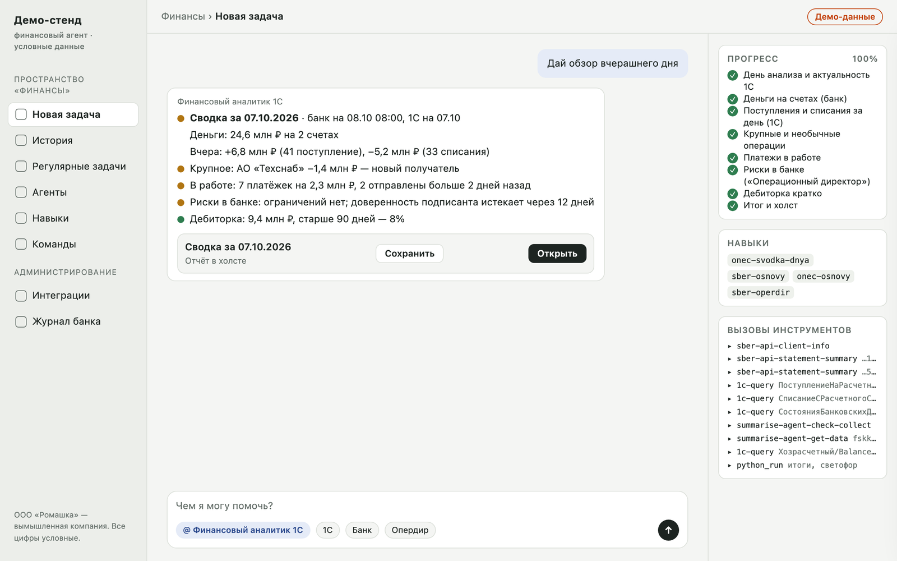
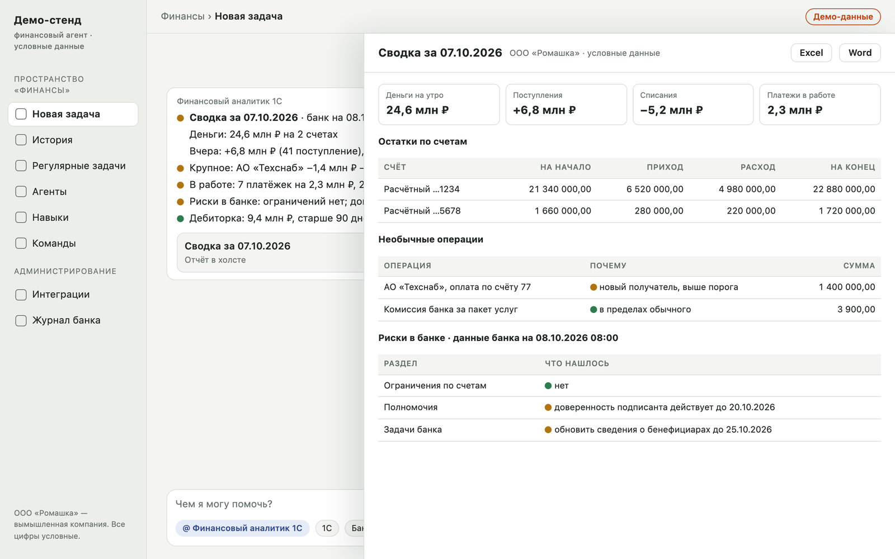
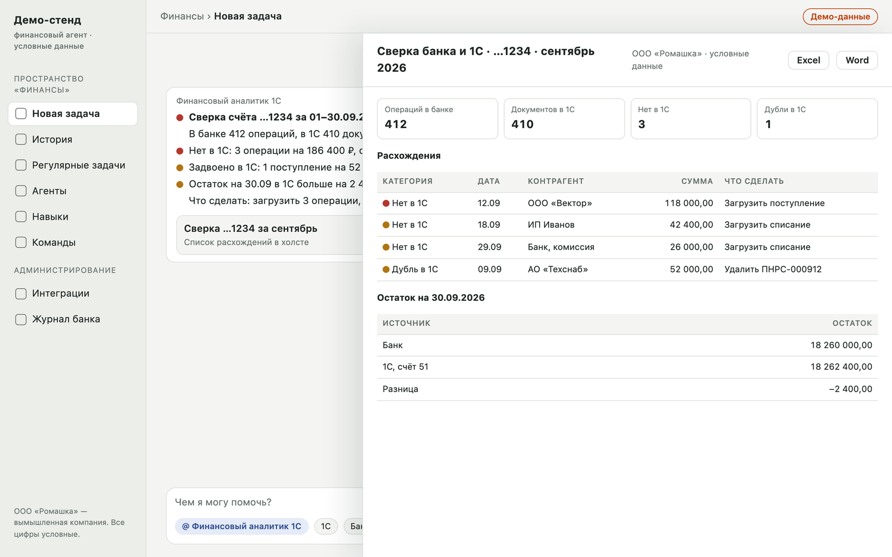
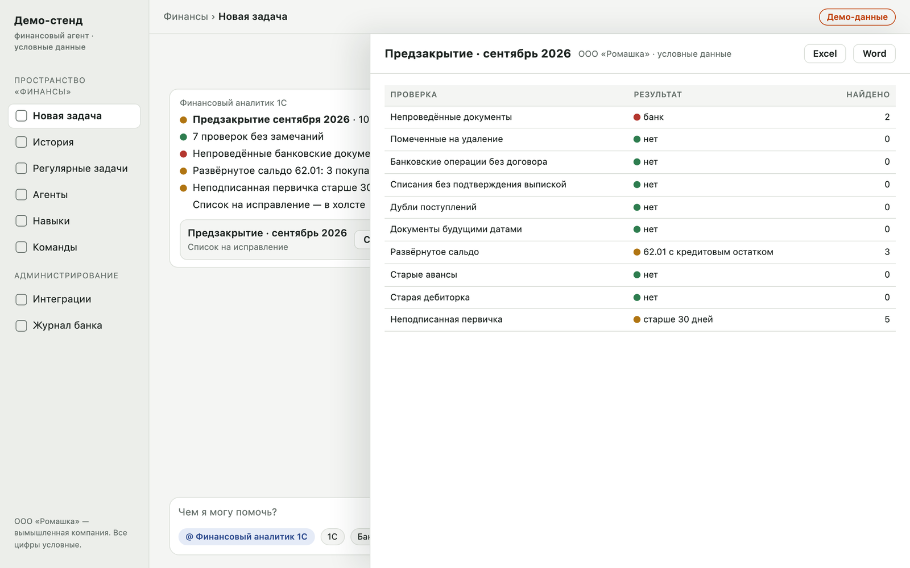
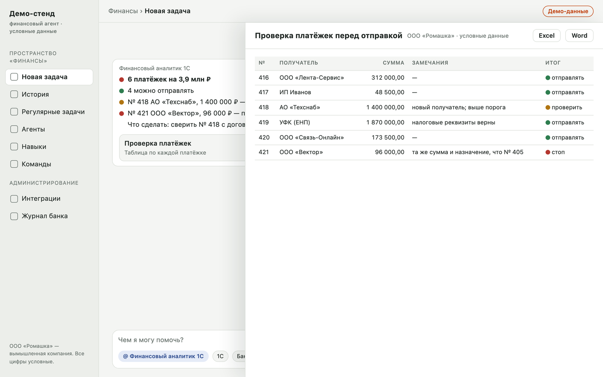
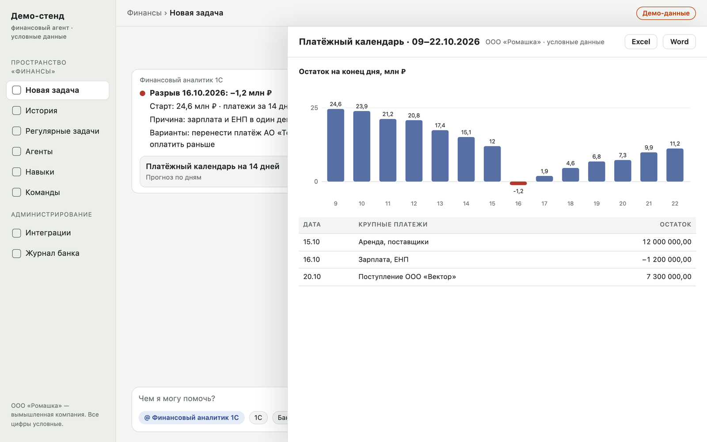
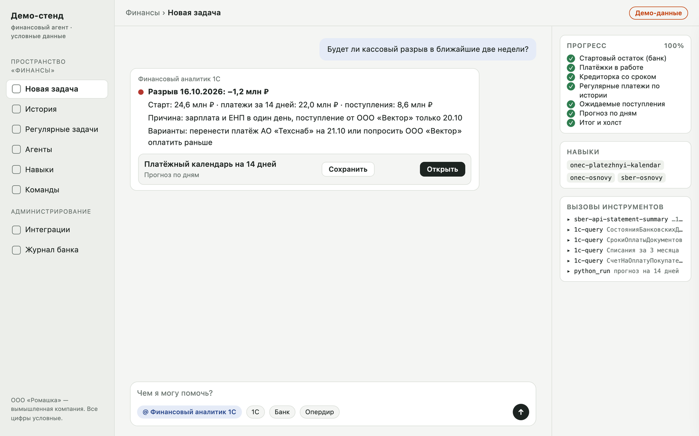
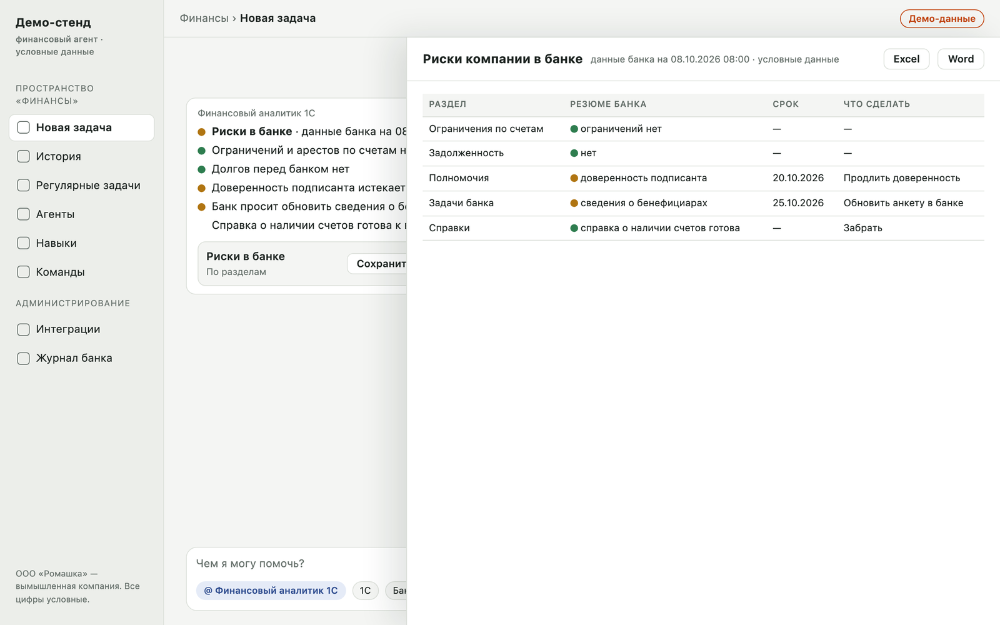
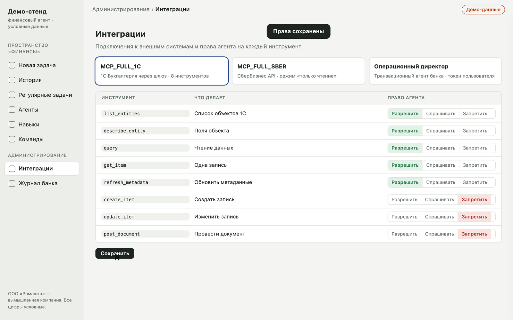

Как это устроено
«Финансовый аналитик 1С» — агент в пространстве «Финансы» GigaCowork. Он берёт данные из учёта и банка, считает и даёт заключение. Решения принимает и документы подписывает человек.
Откуда агент берёт данные
Что агент делает
- Читает данные 1С и банка.
- Считает, сравнивает, ищет расхождения и риски.
- Готовит отчёты, таблицы Excel, слайды и черновики документов: акт сверки, реестр платежей, ответ банку.
Чего агент не делает никогда
- Не создаёт, не меняет и не проводит документы в 1С.
- Не создаёт, не подписывает и не отправляет платёжки, письма и заявления в банк, не акцептует требования.
- Не пишет контрагентам и в чаты от имени компании.
Как задать вопрос
- Откройте пространство «Финансы» и нажмите «Новая задача».
- Через значок @ выберите агента «Финансовый аналитик 1С».
- Спросите обычными словами, как спросили бы коллегу: «Кто нам должен?», «Ушли ли вчерашние платёжки?». Период и счёт можно не называть — агент возьмёт значения по умолчанию и напишет, какие взял.
- Если агенту не хватает данных для ответа, он задаст один уточняющий вопрос. В остальных случаях отвечает сразу.
Как читать ответ
- В чате — до 10 строк: светофор, 3–6 ключевых показателей, главный вывод и что сделать человеку.
- В холсте — полный отчёт с таблицами и графиками. Попросите «в Excel», «в Word» или «сделай слайд» — агент подготовит файл.
- В каждом ответе указаны источник (1С или банк, какие документы и счета), период, дата актуальности данных и допущения.


Насколько свежие данные
- 1С актуальна на дату последнего загруженного банковского документа. Если она отстаёт, агент пишет об этом в первой строке ответа: «1С отстаёт: данные на …».
- Выписка банка за сегодняшний день может быть неполной — агент это помечает.
- «Операционный директор» отдаёт актуальные данные банка на момент запроса.
Карта навыков
Агент сам выбирает навык по вопросу. Карта нужна, чтобы понимать, что именно он умеет.
| Задача | Навык | Источник |
|---|---|---|
| Сводка за день: деньги, движение, платежи, риски банка | onec-svodka-dnya | банк, 1С, «Операционный директор» |
| Сколько денег на счетах сейчас или на дату | sber-ostatki | банк |
| Хватит ли денег, кассовый разрыв, платёжный календарь | onec-platezhnyi-kalendar | 1С, остаток из банка |
| Свободные деньги, депозиты, НСО, кредитные предложения | sber-razmeshchenie | банк, 1С |
| ДДС по учёту, план-факт, сравнение с бюджетом | onec-dds-plan-fakt | 1С |
| ДДС по выписке банка | sber-dds | банк |
| Выписка и поиск операций | sber-vypiska | банк |
| Кто нам должен | onec-debitorka | 1С |
| Кому мы должны, очерёдность оплаты | onec-kreditorka | 1С |
| Досье контрагента, сальдо, акт сверки | onec-kontragent | 1С |
| Деньги с контрагентом по банку, СберРейтинг | sber-kontragent | банк |
| Проверка платёжек до отправки | onec-proverka-platezhek | 1С |
| Ушли ли платёжки, статусы, требования на акцепт | sber-ispolnenie-platezhek | банк, 1С |
| Сверка выписки с 1С | onec-sverka-banka | банк, 1С |
| Выручка по клиентам | onec-vyruchka | 1С |
| Проверка учёта перед закрытием периода | onec-predzakrytie | 1С |
| Письма банка, 115-ФЗ, валютный контроль, сертификаты ЭП | sber-pisma-ep | банк |
| Ограничения по счетам, долги перед банком, полномочия, задачи банка | sber-operdir | «Операционный директор» |
Ещё два навыка служебные: onec-osnovy и sber-osnovy задают правила чтения 1С и API банка. Их подключают другие навыки, отдельно спрашивать их не нужно.
Бухгалтеру
Агент берёт на себя сверку, поиск расхождений и подготовку черновиков. Исправления в 1С, проведение документов и закрытие периода остаются за вами.
Как спросить и что получите
| Вопрос | Что получите | Навык |
|---|---|---|
| «Сверь выписку банка с 1С за сентябрь» | Операции банка, которых нет в 1С; лишние и задвоенные документы; расхождения сумм, дат и контрагентов; сверка остатка по расчётному счёту | onec-sverka-banka |
| «Проверь учёт перед закрытием сентября» | Десять проверок: непроведённые и помеченные на удаление документы, банковские операции без договора, списания без подтверждения выпиской, дубли поступлений, документы будущими датами, развёрнутое сальдо, старые авансы, старая дебиторка, неподписанная первичка | onec-predzakrytie |
| «Подготовь акт сверки с ООО «Ромашка» с начала года» | Досье контрагента и черновик акта сверки в Word: сальдо на начало, документы, обороты, сальдо на конец | onec-kontragent |
| «Пришли ли деньги от ООО «Ромашка» на этой неделе?» | Поступления и оплаты по банку с этим контрагентом, ссылки на счета и договоры из назначения платежа | sber-kontragent |
| «Покажи операции по счёту за 3 октября», «Найди платёж с назначением …» | Список операций с поиском по контрагенту, сумме и назначению, контроль целостности выписки, выгрузка в Excel | sber-vypiska |
| «Какие авансы мы выдали поставщикам?» | Дебиторка по видам с возрастом долга | onec-debitorka |
| «Что пишет банк? Есть запросы по 115-ФЗ?» | Письма банка и валютного контроля со сроками ответа; по просьбе — черновик ответа с перечнем документов | sber-pisma-ep |
| «Найди в 1С платёжку № …» | Разовый поиск документа или записи справочника | onec-osnovy |


Ритм работы
Что делаете вы, а не агент
- Загружаете выписку в 1С, проводите и исправляете документы.
- Закрываете период и делаете регламентные операции.
- Отправляете акт сверки контрагенту и отвечаете банку.
Советы
- Называйте период и счёт, если нужен не основной.
- Агент пишет «1С отстаёт»? Сначала загрузите выписку, потом повторите вопрос.
- После исправлений повторите сверку: в отчёте должно остаться только то, что объяснимо.
Казначею
Деньги на счетах, прогноз, контроль платёжек до и после отправки, размещение свободных средств. Подпись, отправка и акцепт — только в СберБизнесе и только человеком.
Как спросить и что получите
| Вопрос | Что получите | Навык |
|---|---|---|
| «Сколько денег на счетах?», «Какие были остатки на 1 октября?» | Остатки и обороты по каждому счёту, итог по валютам, на сколько дней хватит при среднем расходе | sber-ostatki |
| «Хватит ли денег на платежи на следующей неделе?», «Будет ли кассовый разрыв?» | Прогноз по дням на 14 дней: платёжки в работе, кредиторка со сроком, регулярные платежи по истории, ожидаемые поступления; дата и величина разрыва | onec-platezhnyi-kalendar |
| «Проверь платёжки перед отправкой» | 11 проверок каждой неотправленной платёжки: реквизиты получателя, дубли, новые получатели, крупные суммы, договор и долг, НДС, реквизиты налоговых платежей | onec-proverka-platezhek |
| «Ушли ли вчерашние платёжки?», «Почему платёж не прошёл?» | Платёжки из 1С против выписки и статусов банка: исполнена, принята, отклонена с причиной, не найдена | sber-ispolnenie-platezhek |
| «Какие требования ждут акцепта?» | Входящие платёжные требования за 10 рабочих дней со сроками акцепта | sber-ispolnenie-platezhek |
| «Кому платить в первую очередь?», «Подготовь черновик реестра платежей» | Кредиторка по срокам и очерёдность; видно, на какие долги оплата уже в пути | onec-kreditorka |
| «Есть ли свободные деньги на депозит?», «Нужен ли овердрафт?» | Свободный остаток на горизонте 30 дней с учётом неснижаемого остатка и буфера, действующие депозиты, предложения банка | sber-razmeshchenie |
| «Есть ли ограничения или аресты по счетам?» | Ограничения по счетам и долги перед банком по данным «Операционного директора» | sber-operdir |


Ритм работы
Что делаете вы, а не агент
- Подписываете, отправляете и отзываете платёжки.
- Акцептуете или отклоняете требования.
- Открываете депозиты и подаёте заявки на кредит.
Советы
- Неснижаемый остаток назовите один раз в вопросе — иначе агент считает его нулевым.
- Известные будущие платежи можно приложить файлом: агент добавит их в календарь.
- Платёжка «Отправлено» больше 2 рабочих дней без исполнения — повод проверить её в банке.
Финансовому директору
Утренняя картина дня, движение денег, долги, выручка и риски в банке. Ответы можно сразу получить в виде таблицы Excel или слайда.
Как спросить и что получите
| Вопрос | Что получите | Навык |
|---|---|---|
| «Дай обзор вчерашнего дня», «Что у нас на утро?» | Одна сводка: деньги на счетах, поступления и списания за день, крупное и необычное, платежи в работе, риски в банке, сигналы по дебиторке | onec-svodka-dnya |
| «ДДС за сентябрь», «План-факт ДДС», «Сравни с бюджетом» | Поступления и списания по статьям ДДС, по неделям или месяцам; отклонения от бюджета. Бюджет — файл Excel «статья × период» или документ в пространстве | onec-dds-plan-fakt |
| «ДДС по выписке банка», «Сколько ушло на налоги и зарплату?» | Фактическое движение по банку, разложенное по статьям и разделам | sber-dds |
| «Кто нам должен?», «Топ должников», «Что просрочено больше 90 дней?» | Дебиторка по возрасту, просрочка, концентрация, список «с кем работать по долгам» | onec-debitorka |
| «Выручка по клиентам за квартал», «Кто перестал покупать?» | Выручка по клиентам и номенклатуре, динамика, концентрация, новые и ушедшие клиенты | onec-vyruchka |
| «Будет ли кассовый разрыв в октябре?» | Прогноз денег по дням с датой разрыва | onec-platezhnyi-kalendar |
| «Есть ли свободные деньги под депозит?» | Свободная сумма на горизонте и лучшее предложение банка | sber-razmeshchenie |
| «Всё ли в порядке в банке?» | Риск-обзор: ограничения по счетам, долги перед банком, полномочия, задачи банка | sber-operdir |

Ритм работы
Советы
- Просите формат прямо в вопросе: «в Excel», «слайд для правления», «график по неделям».
- Пороги можно задать свои: «просрочка больше 30 дней», «крупные — от …».
- Сравнение с прошлым периодом агент делает, только если за него есть данные. Нет данных — так и напишет, а не сравнит с нулём.
Руководителю
Агент даёт быстрые ответы о деньгах и рисках компании по данным 1С и банка. Он только читает: ничего не платит, не подписывает и не меняет в учёте.
Что вы получаете
- Утреннюю сводку: деньги, вчерашнее движение, платежи в работе, сигналы.
- Риски в банке: ограничения и аресты по счетам, долги перед банком, сроки ваших полномочий и доверенностей подписантов, задачи банка.
- Ответы без ожидания отчёта: кто должен, хватит ли денег, что с выручкой.
Вопросы, с которых стоит начать
| Вопрос | Что получите |
|---|---|
| «Что у нас на утро?» | Сводка дня одним сообщением |
| «Всё ли в порядке в банке?» | Ограничения, долги перед банком, полномочия, задачи банка |
| «Когда истекают мои полномочия и доверенности подписантов?» | Сроки и сколько дней осталось |
| «Хватит ли денег на платежи до конца месяца?» | Прогноз по дням и возможный кассовый разрыв |
| «Кто нам больше всего должен?» | Топ должников и просрочка |

Контроль и безопасность
- Только чтение. Запрет на создание документов закреплён дважды: в правах на инструменты интеграций и в инструкции агента.
- Доступ есть только у участников пространства «Финансы». Каждый пользователь подключает банковскую интеграцию своим токеном.
- Банковская тайна и персональные данные. ФИО агент показывает, только если без них ответ непонятен. Номера счетов — по последним 4 цифрам. Данные не пересылаются в другие системы.
- Журнал действий ведётся в администрировании Cowork («Аудит событий»).
- Выводы агента — аналитика, а не юридическое заключение. По ограничениям и долгам перед банком сверяйтесь с документами в СберБизнесе.
Что нужно решить руководителю
- Кто входит в пространство «Финансы» и пользуется агентом.
- Кто подключает «Операционного директора» — банковскую сводку о рисках — своим токеном.
- Нужна ли доставка утренней сводки в Telegram (только в личный чат получателя).
- Утвердить права на инструменты: запись в 1С и банк запрещена или требует подтверждения.
- Назначить ответственных по ролям.
| Роль | За что отвечает |
|---|---|
| Бухгалтер | Актуальность 1С: загрузка выписки, исправления по итогам сверки и предзакрытия |
| Казначей | Платежи: проверка до подписи, контроль исполнения, размещение денег |
| Финансовый директор | Сводка, ДДС, долги, выручка; пороги и параметры отчётов |
| ИТ-специалист | Интеграции, доступы, токены, права на инструменты, обновление навыков |
ИТ-специалисту
Как устроены интеграции, что где настраивается, какие права выставить и что делать при сбоях.
Схема
Что где настраивается
| Компонент | Где | Что важно |
|---|---|---|
| Интеграция MCP_FULL_1C | Администрирование → Интеграции | Адрес шлюза mcp-1c и Bearer-токен из кабинета шлюза. 8 инструментов: list_entities, describe_entity, query, get_item, refresh_metadata и три на запись |
| Интеграция MCP_FULL_SBER | Администрирование → Интеграции | Режим «только чтение». Навыки используют только инструменты sber-api-* — вызовы эндпоинтов API; сводные sber-util-* и sber-ops-* не используются |
| «Операционный директор» | Администрирование → Интеграции | Streamable HTTP, аутентификация «Токен доступа». Каждый пользователь подключает интеграцию своим токеном СберБизнес API с услугами MCP_COMMON и MCP_TRANSACT_AGENT. Идёт напрямую в банк, без шлюза |
| Навыки | Пространство → Навыки | 20 файлов Markdown. Исходники — в репозитории, папка cowork-skills/; это источник истины |
| Агент | Пространство → Агенты | Название, описание, инструкция, 31 навык (20 своих + 11 системных), 3 интеграции |
| Регулярные задачи, команды | Пространство → Регулярные задачи, Команды | Сводка дня 09:00; проверка платёжек 11:00 и 16:00; дебиторка по понедельникам; календарь пн и чт |
Права на инструменты
| Инструменты | Право |
|---|---|
1С: list_entities, describe_entity, query, get_item, refresh_metadata | разрешить |
1С: create_item, update_item | запретить или «спрашивать подтверждение» |
1С: post_document | запретить |
Банк: sber-api-* чтения | разрешить, пока интеграция в режиме «только чтение»; если режим меняется — sber-api-call перевести в «спрашивать подтверждение» |
«Операционный директор»: summarise-agent-check-collect, summarise-agent-get-data | разрешить (только чтение) |

Подключение источников
1С
- Опубликовать стандартный интерфейс OData; пользователь OData — только с правами на чтение.
- Зарегистрировать подключение в кабинете шлюза mcp-1c и выпустить токен.
- После изменения конфигурации 1С вызвать
refresh_metadata.
Банк
- Подключение к СберБизнес API: client_id, клиентский сертификат mTLS нужного контура (боевой или тестовый), услуги под нужные эндпоинты чтения.
- Для «Операционного директора» — услуги
MCP_COMMONиMCP_TRANSACT_AGENT. - Access-токен короткоживущий, refresh-токен меняется при каждом обновлении. Обновляйте токены в одном месте, не параллельно из разных систем.
Навыки и агент: как вносить изменения
- Правьте файл навыка в репозитории. Описание пишется по шаблону «Используй этот навык, когда… Не используй для… — навык X»: строка «Не используй» не даёт соседним навыкам перехватывать вопросы.
- Новый навык: «Навыки → Добавить → Загрузить файл навыка». Существующий: меню навыка → «Редактировать», поля «Когда применять» (описание) и «Инструкции» (тело). API навыков защищён CSRF — правки только через интерфейс.
- Агент: после правки дождитесь активной кнопки «Сохранить» и уведомления «Агент сохранен».
- Прогоните набор проверочных фраз (
routing-tests.md, 32 вопроса): агент должен выбирать ожидаемый навык.
Диагностика
| Симптом | Причина | Что делать |
|---|---|---|
| 401 от интеграции 1С | Токен шлюза на паузе или отозван | Проверить в кабинете шлюза, снять паузу или выпустить новый токен |
| Ответ 1С обрезан | Лимит размера ответа шлюза | Навыки сами уменьшают выборку; в своих запросах — select и постраничная выгрузка |
| «1С отстаёт: данные на …» | В 1С не загружена выписка | Загрузить выписку, повторить вопрос |
Банк отвечает 202 STATEMENT_RESPONSE_PROCESSING | Выписка формируется | Навык повторяет запрос до 3 раз; иначе день помечается как неполученный |
| Медленно, 429 | Ограничение частоты запросов к банку | Сузить период или число счетов |
| 401 у «Операционного директора» | Токен пользователя истёк или не подключён | Переподключить интеграцию своим токеном |
| 403 у «Операционного директора» | Нет услуги MCP_TRANSACT_AGENT | Добавить услугу в подключении к СберБизнес API |
Unexpected value 'account_turns' | Запрос разделов без явного списка | Навык всегда передаёт список; если повторяется — обращение к команде банка |
| 503 сервиса суммаризации | Временная недоступность сервиса банка | Повторить через несколько минут |
Разрыв TLS, ECONNRESET | Сертификат не того контура | Боевой сертификат — для боевого адреса, тестовый — для тестового |
sendMessage failed: 500 в задаче с агентом | Сбой платформы Cowork | Проверить задачу без агента; если без агента работает — обращение в поддержку Cowork |
| Агент выбрал не тот навык | Пересечение описаний | Прогнать проверочные фразы, уточнить строку «Не используй для…» |
Безопасность
- Токены и пароли вводятся только в формы администрирования и хранятся в менеджере паролей — не в чате, не в файлах навыков и не в репозитории.
- Минимум прав: OData-пользователь только на чтение, интеграция банка в режиме «только чтение», запись в 1С запрещена.
- Сотрудник уходит из компании — отзовите его токены и уберите из пространства.
- Периодически просматривайте «Аудит событий».